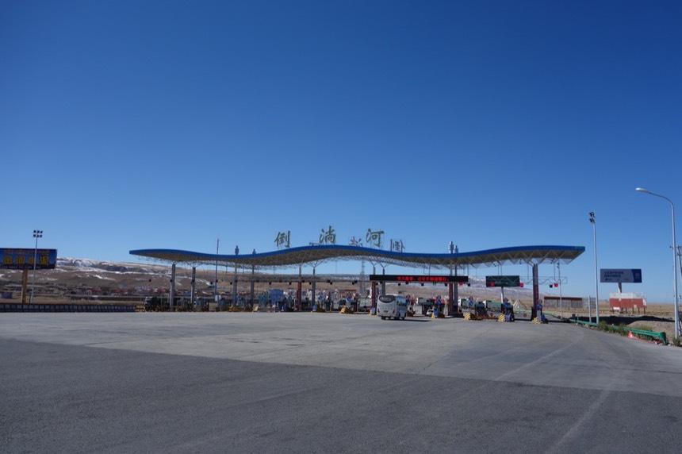

10/24 Day 4 江西溝
由於沒有準備額外的睡褲，我的睡衣就是瓜皮帽+7-11發熱衣+四角褲，簡單的說就是很冷。
所以我都會蓋兩條棉被睡，很重，但這樣才暖活，要是有電熱毯的話就可以少發一點抖。
昨天晚上不到八點就入睡，但睡眠品質很差，一直翻來覆去，不知是冷還是身體不舒服？
撐到早上六點起床，想用熱水壺燒熱水喝，發現它壞掉了...
每天早上來一杯熱咖啡已經是旅行中小小的幸福，換用別的房間的水壺燒水這夢想才得以實現。
（應該是插頭的問題，我拿別的房間的熱水壺進來用也不行，但是在別的房間卻可以正常燒水）
利用一大清早沒有人醒著的時後去大便已成為一種儀式，誰知一進到廁所整個人開始反胃嘔吐。
吐出來的東西只有半夜渴到不行，口乾舌燥嘴脣乾裂，勉強逼自己喝的水。
生病了嗎？
還好昨天吃的泡麵消化了，要是吐出來我的4元就浪費了。
大便/嘔吐完畢回到三樓房間，每做一個動作：比如換褲子、穿襪子、收拾一個小包包，
中間都要休息停頓很久，整個人很沒有活力，看來連將小喵號搬到樓下都有困難了，更何況等下要爬日月山。
準備出發之前，有股睡意來襲，把自己拉回床上蓋著棉被。
迷迷糊糊的睡去，居然也加減睡了兩個小時到九點才悠然轉醒。
醒來後感覺精神明顯好多了！
還好剛才沒有勉強出發，不然不知會半路昏倒何處？
離開旅館時拍到的地圖，是青海的地圖，光是青海就已經好大。
一離開樂都就是緩緩的爬坡 一路36公里換來17公里的下坡到“倒淌河”，今天如果順順騎的話，理論上會騎到青海湖畔的。
路邊的積水（商家幫卡車加水，所流出來的）都結了冰，這次旅行中第一次看到結冰的東西，所以很興奮。
覺得早上很冷，所以戴上長指的冬季單車手套，有兩個問題：
1.尺寸太太，我買XL，但真的太大。手套的末端，指尖的位置都空空的。
2.戴上後行動很不方便，做任事：拍照、寫筆記本、甚至連抽一張衛生紙出來都不行。
一定要脫下手套，才能做事，但長指手套保暖性威武。戴上甚至會熱到留汗。
今天也是第一次穿越隧道，還一次就來三個。
趕緊停車把紅色尾燈開啟，不論隧道長度多少，只要聽到後面有卡車追趕的聲音，帶給單車騎士的心理壓力始終很大。
地上的碎玻璃常常是造成爆胎的元凶，這是路過的駕駛亂丟酒瓶，然後再被車輛碾碎之後的產物，要小心閃避。
嗑完了最後的橘子，旅行吃這個真不錯，方便攜帶、便宜、好吃又能補充維生素C。
本來想看到水果攤再買一些來吃，但下次吃的時候已經在拉薩了。
路旁看到有人在賣農產品，依照我的觀察，這應該是蔥或是大蒜苗之類的。
上坡路爬了一段後就開始看到雪山，一開始在遠方，慢慢的就在腳邊。
在太陽曬不到的地方處處是積雪。
也許因為旅行第一天扛紙箱的時候，施力沒有抓好，右手指頭的關節有點紅腫發痛，在騎車上不太好使，
塗上了本來是為了腳所攜帶的痠痛軟膏，過了幾天就好多了。現在只能先忍忍。
另一個農產品是蜂蜜，還蠻多人在賣這個的，東西就擺在路邊的小桌子，路旁通常是養蜂的地方。
路邊很多這樣一堆一堆的煤灰（或是小碎石堆）應該有兩種用途
1.冬天的時候，可以用來增加輪胎或是路面的摩擦力。
2.充當路邊的防撞警示，如果疲勞駕駛偏離車道的時候，就會撞到這些小土堆而醒來（？）。
這兩個可能性都沒有根據，完全是我自己瞎猜的。
爬到山頂因為沒有個牌子寫個“日月山”或是海拔ＸＸＸＸ的標記。就只是一個爬坡的轉折處。
以至於忘了要在山頭歡呼，順便吃昨天買的八寶粥當慶祝。
等我發現時已經在往倒淌河的下坡路上，今天的重頭戲日月山就這麼結束了。
開始看到牦牛，其實就是長了很長很長很厚重的毛的牛，什麼顏色都有，不僅限於黑色。
因為早上出發的晚了，抵達“倒淌河”這本來是今天的目的地時已經是下午兩點（本來預估中午前就會到）

騎車騎的屁股很痛，要不斷變換姿勢，但還是痛的皺眉。
停車休息時腳也有點殘廢，不太好走路，希望這騎車旅行撞墻期早點過去。（正常都要一個星期左右）
在倒淌河吃了午餐，”牛肉"燴麵。既然從第一天開始，每天的落腳處就已經跟預計的路線不一樣，今天也打算吃飽之後繼續往前騎一段。
肉超級無敵少，比泡麵裡面的肉還少，有點黑心。
麵到是超級多，還有兩種麵，一般的手桿麵和粉絲。
這附近的野生菇類似乎也小有名氣，不僅有單獨販售，在餐廳吃東西也都會吃到各式的菌菇。
第一次有東西多到（也不太好吃）讓我無法吃完，喝完湯補充水份後離去。
倒淌河 〉黑馬鄉是明天的行程，吃完飯都下午兩點半，不太可能騎到那麼遠（畢竟規劃為一天的行程）
離開倒躺河沒多久，就會進入青海湖的範圍，沿路上都是住宿，所以就騎多少算多少吧。
這一片的草原，在夏天的時候應該是綠油油的，但時節不一樣，現在就是枯黃黃的。
青海湖也許有嚴格的開發限制，一路上只見牧場（通常會兼作餐廳跟住宿）養一堆的羊和牦牛。
下午之後騎行就會變成大逆光，帶上太陽眼鏡也沒什麼幫助。
看到青海湖的門檻別太高興，實際上離湖邊還遠到不行。
就算騎到湖畔了，馬路本身離湖區就超遠（大概1公里以上）青海湖僅是視野可見罷了，跟在新疆的時候，騎在賽里木湖的邊緣相比實在差很多。
離湖邊最近最近的距離，也還有這麼遠。延路有見到很多的餐廳或是大量的青年旅館也都蓋的離湖好遠（但會強調有通往湖邊的小徑）
但是在馬路邊就是，方便投宿。
路上經過最大的開發規模就是青海湖旅館
以為那一段路會比較靠近湖區 結果也沒有
只是一大堆的房子一路往湖邊蓋過去罷了
過站不停往20公里外的江西溝前進
老天保佑我在天黑前到，這段路的車少到可能沒有路過的車可以幫我用頭燈照明。
太陽一下山或是只是被什麼給擋住，沒曬到太陽，一瞬間開始變冷。
切記不夜騎 要確實把握每天的住宿點。（有點擔心又用重演悲劇，還好今天算順利）
六點半多，在太陽最後的餘光下進入了江西溝，一個發展中的小城市。

再次強調，物價真的漲很多，今天的住宿費用是30元，四人房我一個人睡（但我的所有權其實只有一張床）
這房間的水準雖然不差，但在2007年大約是15~20元一床的價位。
旅館主人的小孩X2

旅館外觀，因為冬天很冷，所以防風是最基本的要求，入口的那個布做的門簾非常厚重，我每次都會順手想用一隻手撥開，然後就會被硬生生擋下。
入夜後，街燈亮起，看起來還挺漂亮的，裹著外套穿上舒適的拖鞋在街上找尋晚餐。
晚餐在隔壁的飯館吃，看到菜單有各式各樣的炒飯心裡超開心！
但是居然沒有米飯了！！！不！！！
又吃一碗紅燒牛肉麵，這一路上真的都吃麵食類居多，吃到飯的次數實在不多。
跟中午那碗麵一樣，肉不多，也還好不多，因為這牛肉吃起來有股恐怖的腥味，吃多會怕。
旅館外頭的內院，有隻小貓在喵喵的叫，想到半夜那麼酷寒。不知道祂要睡在哪取暖？
好想念家裡的莫古先生...
沒特別強調就表示今天也是擦澡，畢竟有盥洗條件的旅館不在預算內。
手電筒很重要，夜騎的時候也許覺得它很不亮，根本廢物，但是住宿時晚上去外面的廁所方便，就會覺得有手電筒好棒。

雖然沒能洗衣服（洗自己都有困難了還洗衣服）但每天睡前都會儘量把衣服掛起來通通風，感覺這樣就能夠變乾淨！
今日花費
15 午餐 牛肉燴麵
13 晚餐 紅燒牛肉麵
30 住宿 四人房 有電熱毯
-----
58
今日騎乘
騎乘時間 07：45：30
距離 116.3km
平均速度 15.3km
路線圖 (Google Map 連結)